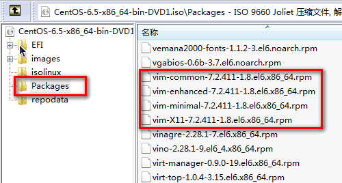

Linux yum是什么，yum源配置（网络yum源和本地yum源）
yum，全称“Yellow dog Updater, Modified”，是一个专门为了解决包的依赖关系而存在的软件包管理器。就好像 Windows 系统上可以通过 360 软件管家实现软件的一键安装、升级和卸载，Linux 系统也提供有这样的工具，就是 yum。
可以这么说，yum 是改进型的 RPM 软件管理器，它很好的解决了 RPM 所面临的软件包依赖问题。yum 在服务器端存有所有的 RPM 包，并将各个包之间的依赖关系记录在文件中，当管理员使用 yum 安装 RPM 包时，yum 会先从服务器端下载包的依赖性文件，通过分析此文件从服务器端一次性下载所有相关的 RPM 包并进行安装。
yum 软件可以用 rpm 命令安装，安装之前可以通过如下命令查看 yum 是否已安装：
[root@localhost ~]# rpm -qa | grep yum
yum-metadata-parser-1.1.2-16.el6.i686
yum-3.2.29-30.el6.centos.noarch
yum-utils-1.1.30-14.el6.noarch
yum-plugin-fastestmirror-1.1.30-14.el6.noarch
yum-plugin-security-1.1.30-14.el6.noarch
使用 rpm 命令安装 yum 的具体方式可查看《Linux怎么安装yum》一节。
使用 yum 安装软件包之前，需指定好 yum 下载 RPM 包的位置，此位置称为 yum 源。换句话说，yum 源指的就是软件安装包的来源。使用 yum 安装软件时至少需要一个 yum 源。yum 源既可以使用网络 yum 源，也可以将本地光盘作为 yum 源。接下来就给大家介绍这两种 yum 源的搭建方式。
网络 yum 源搭建
一般情况下，只要你的主机网络正常，可以直接使用网络 yum 源，不需要对配置文件做任何修改，这里对 yum 源配置文件做一下简单介绍。网络 yum 源配置文件位于 /etc/yum.repos.d/ 目录下，文件扩展名为"*.repo"（只要扩展名为 "*.repo" 的文件都是 yum 源的配置文件）。
[root@localhost ~]# ls /etc/yum.repos.d/
CentOS-Base.repo
CentOS-Media.repo
CentOS-Debuginfo.repo.bak
CentOS-Vault.repo
[root@localhost yum.repos.d]# vim /etc/yum.repos.d/ CentOS-Base.repo
[base]
name=CentOS-$releasever - Base
mirrorlist=http://mirrorlist.centos.org/? release= $releasever&arch=$basearch&repo=os
baseurl=http://mirror.centos.org/centos/$releasever/os/$basearch/
gpgcheck=1
gpgkey=file:///etc/pki/rpm-gpg/RPM-GPG-KEY-CentOS-6
…省略部分输出…
- [base]：容器名称，一定要放在[]中。
- name：容器说明，可以自己随便写。
- mirrorlist：镜像站点，这个可以注释掉。
- baseurl：我们的 yum 源服务器的地址。默认是 CentOS 官方的 yum 源服务器，是可以使用的。如果你觉得慢，则可以改成你喜欢的 yum 源地址。
- enabled：此容器是否生效，如果不写或写成 enabled 则表示此容器生效，写成 enable=0 则表示此容器不生效。
- gpgcheck：如果为 1 则表示 RPM 的数字证书生效；如果为 0 则表示 RPM 的数字证书不生效。
- gpgkey：数字证书的公钥文件保存位置。不用修改。
本地 yum 源
在无法联网的情况下，yum 可以考虑用本地光盘（或安装映像文件）作为 yum 源。Linux 系统安装映像文件中就含有常用的 RPM 包，我们可以使用压缩文件打开映像文件（iso文件），进入其 Packages 子目录，如图 1 所示：

图 1 安装映像文件的 Packages 子目录
可以看到，该子目录下含有几乎所有常用的 RPM 包，因此使用系统安装映像作为本地 yum 源没有任何问题。
在 /etc/yum.repos.d/ 目录下有一个 CentOS-Media.repo 文件，此文件就是以本地光盘作为 yum 源的模板文件，只需进行简单的修改即可，步骤如下：
-
放入 CentOS 安装光盘，并挂载光盘到指定位置。命令如下：
[root@localhost ~]# mkdir /mnt/cdrom
#创建cdrom目录，作为光盘的挂载点
[root@localhost ~]# mount /dev/cdrom /mnt/cdrom/
mount: block device/dev/srO is write-protected, mounting read-only
#挂载光盘到/mnt/cdrom目录下 -
修改其他几个 yum 源配置文件的扩展名，让它们失效，因为只有扩展名是"*.repo"的文件才能作为 yum 源配置文件。当也可以删除其他几个 yum 源配置文件，但是如果删除了，当又想用网络作为 yum 源时，就没有了参考文件，所以最好还是修改扩展名。 命令如下：
[root@localhost ~]# cd /etc/yum.repos.d/
[root@localhost yum.repos.d]# mv CentOS-Base, repo CentOS-Base.repo.bak
[root@localhost yum.repos.d]#mv CentOS-Debuginfo.repo CentOS-Debuginfo.repo.bak
[root@localhost yum.repos.d]# mv CentOS-Vault.repo CentOS-Vault.repo.bak -
修改光盘 yum 源配置文件 CentOS-Media.repo，参照以下方修改：
[root@localhost yum.repos.d]# vim CentOS-Media.repo
[c6-media]
name=CentOS-$releasever - Media
baseurl=file:///mnt/cdrom
#地址为你自己的光盘挂载地址
#file:///media/cdrom/
#file:///media/cdrecorder/
#注释这两个的不存在地址
gpgcheck=1
enabled=1
#把enabled=0改为enabled=1, 让这个yum源配置文件生效
gpgkey=file:///etc/pki/rpm-gpg/RPM-GPG-KEY-CentOS-6
关注公众号「站长严长生」，在手机上阅读所有教程，随时随地都能学习。内含一款搜索神器，免费下载全网书籍和视频。

微信扫码关注公众号